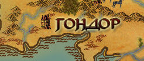

Гондор — великое и могущественное королевство людей в Средиземье, граничащее с Роханом на севере, с Харадом на юге и с Мордором на востоке. Первой столицей Гондора был Осгилиат, после чего в 1640 Т. Э. этот титул перешёл Минас Тириту.
География
Гондор — тёплая страна с плодородными землями, множеством рек и цепью гор на севере и востоке.
Крайние точки
- Западная — Изенгард. Крепость на западе каленардона (Рохана).
- Восточная — Чёрные Врата, крепость Гондора, построенная на Дагорладе в форме огромных врат, для открытия которых использовалось множество быков. Была захвачена Мордором.
- Северная — крепость Амон Сул.
- Южная — спорная. Иногда был Умбар — пиратская крепость, переходившая из рук в руки. При короле Хиармендакиле I таковой точкой был Ближний Харад.